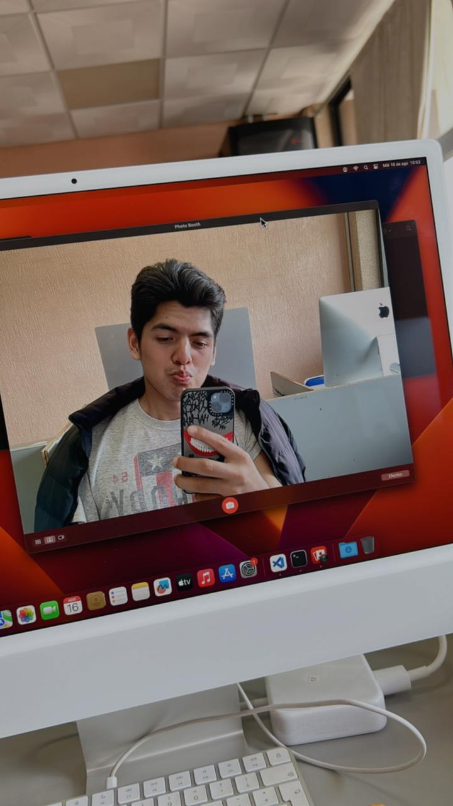

¿Qué tal? mi nombre es Alexis Evaristo Ramírez Pérez, muchos no saben pero soy del extranjero, aunque me veo más mexicano que nada, y eso me parece bien, he aprendido mucho de aquí porque tengo muchos años viviendo en México. Tengo 19 años y actualmente estoy estudiando la universidad.
Es un pequeño pueblito rodeado de mezquites dentro del estado de Hidalgo, tiene diversidad de flora y fauna, al igual que se encuentra una pirámide dentro de un panteón y eso lo hace especial.
El Instituto Tecnológico Superior del Occidente del Estado de Hidalgo es una universidad que se encuentra en el municipio de Mixquiahuala de Juárez donde egresados de esta institución salen completamente preparados para iniciar la etapa laboral en una empresa o lugar.